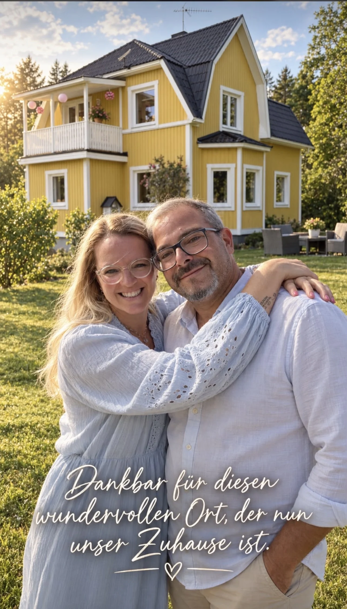

Auswandern · Toby & Ela
Warum wir nach Schweden ausgewandert sind
Stand: Oktober 2026 · Persönlicher Erfahrungsbericht

Ein persönlicher Einblick in unseren Neustart in Schweden im März 2026.
Ein Gedanke wird ein Plan
Ein neues Leben in Schweden beginnt nicht erst am Umzugstag. Bei uns führte der Weg über Reisen, die Suche nach einem passenden Zuhause und viele Gespräche darüber, wie wir als Familie künftig leben möchten. Småland mit seinen Wäldern, Seen und kleinen Orten hat uns dabei besonders angesprochen.
Unser Neustart 2026
Am 1. März 2026 sind wir nach Schweden gezogen. Ein solcher Schritt bedeutet nicht nur einen Ortswechsel. Man lässt vertraute Abläufe zurück und muss sich um neue Regeln, Sprache, Schule, Arbeit und ganz alltägliche Dinge kümmern.
Was wir gelernt haben
Es hilft, Aufgaben in Etappen zu planen: wichtige Dokumente sammeln, finanzielle Reserven realistisch einschätzen und für Behördengänge ausreichend Zeit einplanen. Nicht alles funktioniert sofort. Gerade deshalb möchten wir hier auch über Herausforderungen sprechen – nicht nur über schöne Landschaften.
Unser Tipp
Wer von Schweden träumt, sollte das Land möglichst auch außerhalb der Urlaubssaison kennenlernen. Der Alltag im November fühlt sich anders an als ein Sommertag am See. Unsere Erfahrungen sind persönlich und ersetzen keine aktuellen Auskünfte schwedischer Behörden.